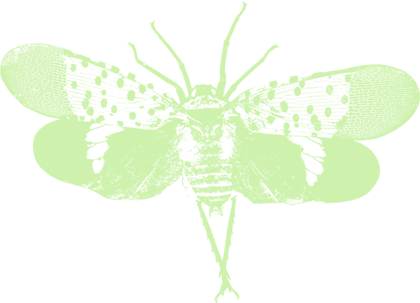

The lanternfly’s first recorded arrival in the United States is in the year 2014.
It arrived in Pennsylvania. I learn that the lanternfly isn’t even a fly, it is a plant hopper,
more like a cicada than a beetle, moving in short hops and flights rather than long ones. On arrival,
it found a home in the ‘tree of heaven’, an invasive species itself, growing on disturbed soil on the
edges of highways and roads. One uninvited guest harboring another from the same continent.

imagine its journey across sea and land. Perhaps a female lanternfly found a wooden box in
an export yard in China, maybe a box of electronics, clothes, or plastic toys. She might have
found a small dark corner and laid her eggs on the woody surface protected from light and rain.
The box would pass through many hands, many machines, until it sat among a sea of boxes afloat on a ship.
The unborn nymphs would travel the enormous stretch of the Atlantic, stopping between islands and ports, to finally
arrive in Pennsylvania. I wonder what it was like for them to emerge in a city no lanternfly had seen before.
Which way did they turn first? What smell did they follow?